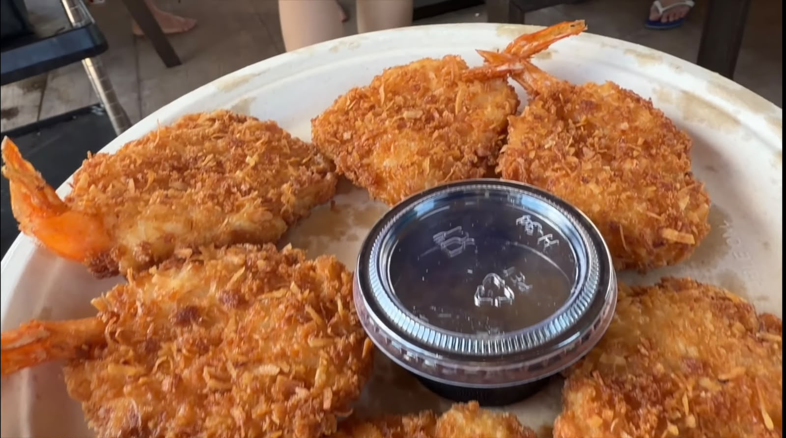
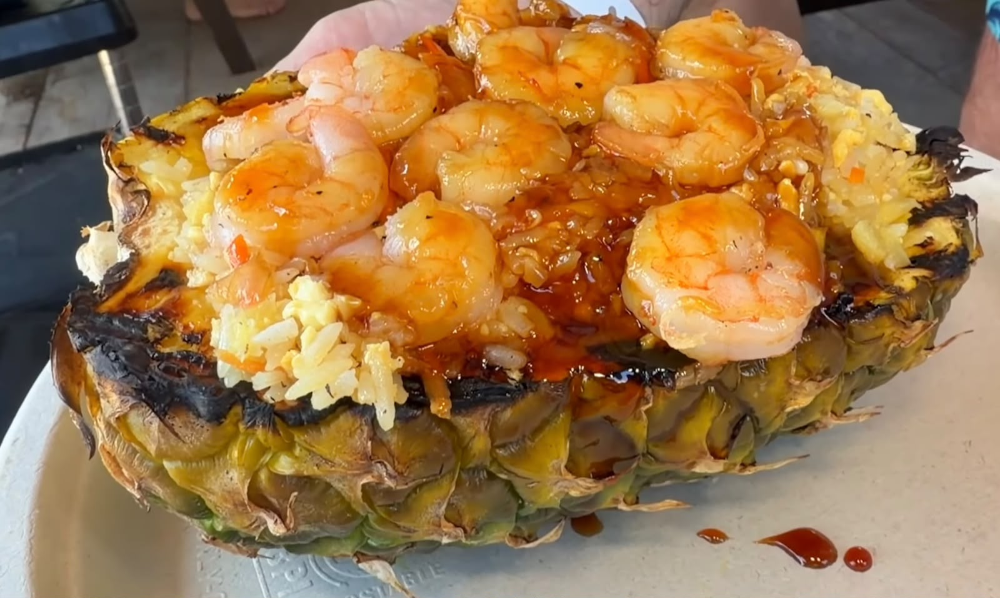
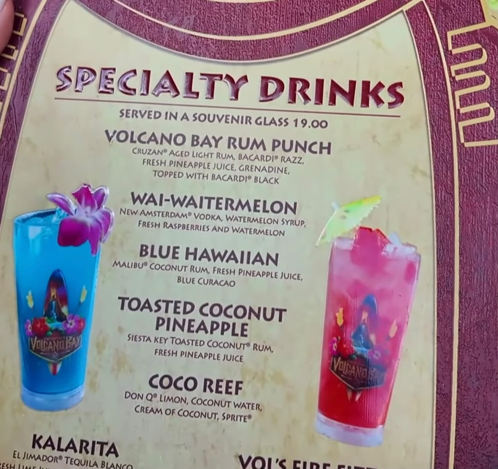

Melhores Comidas do Volcano Bay: Sabores Havaianos no Parque Aquático da Universal

O Volcano Bay, parque aquático da Universal Orlando, tem uma vibe tropical inspirada nas ilhas do Pacífico e no Havaí, e isso vai muito além da decoração. O cardápio segue a mesma linha, com pratos bem diferentes do hambúrguer/pizza padrão de parque. Se você está planejando um dia lá, vale reservar espaço no estômago (e no orçamento) para essas opções.
Coco No Shrimp: camarão empanado no coco
Um dos destaques do menu mais reservado do parque: camarão empanado com coco, servido com um molho agridoce muito saboroso. Sai por cerca de US$ 14. É um prato que costuma estar disponível no serviço de Cabanas (área de aluguel premium com atendimento dedicado), vale perguntar na hora de reservar.
Porco empanado (lumpia)
Outra opção do cardápio de Cabanas: porco empanado no estilo lumpia, por cerca de US$ 8,99. Combina bem com os outros pratos da lista para quem quer variar entre mar e terra.
Abacaxi com arroz e camarão
Um prato mais robusto, com abacaxi, arroz e camarão, por cerca de US$ 22,99: boa pedida para dividir ou para quem está com mais fome depois de um dia de escorregadores. Servido dentro do próprio abacaxi grelhado, é tão bonito de ver quanto gostoso de comer.

Poke bowl
Versão do parque leva frango frito, molho agridoce cítrico e arroz com coco: um giro tropical no clássico bowl havaiano, equilibrando o lado crocante do frango com o frescor do molho cítrico.
Drinks tropicais
Para os adultos, o Volcano Bay tem uma lista de drinks especiais servidos em copo souvenir, bom para relaxar entre uma descida e outra na piscina de ondas. Alguns exemplos do cardápio: Volcano Bay Rum Punch (rum, Bacardi Razz e suco de abacaxi fresco), Blue Hawaiian (rum de coco e curaçau azul), Toasted Coconut Pineapple e o Coco Reef, que leva água de coco e cream of coconut.

Sobremesa: vulcão de chocolate e coco
Para fechar com chave de ouro: uma sobremesa em formato de vulcão, combinando chocolate e coco sobre uma base de cookie, referência direta ao vulcão que dá nome ao parque, e o jeito mais temático de terminar o passeio.
Vale reservar uma Cabana?
Vários desses pratos fazem parte do menu especial das Cabanas do Volcano Bay, espaços privativos de aluguel com atendimento próprio. Se o seu roteiro inclui um dia mais tranquilo no parque, vale considerar: além do conforto (sombra, guarda-volumes, atendimento no local), dá acesso a esse cardápio diferenciado.
Preços e disponibilidade de pratos podem mudar sem aviso prévio. Confirme no local ou no app oficial da Universal Orlando antes da sua visita.
Vai visitar o Volcano Bay e quer garantir uma Cabana ou o ingresso combinado com os outros parques da Universal? A gente ajuda a montar o roteiro certo pro seu perfil de viagem.
Falar no WhatsApp